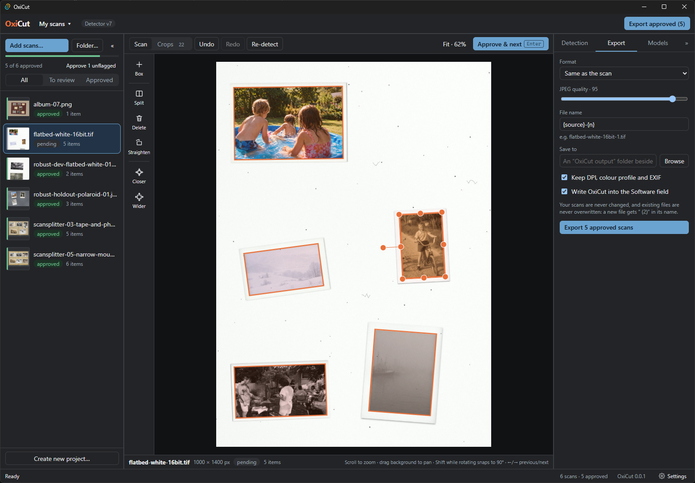
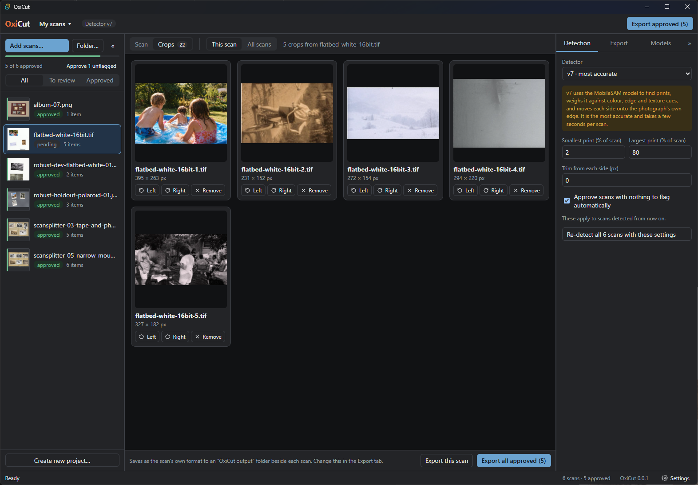

Scan a whole pile of photos at once. OxiCut cuts them apart.
Put several prints or postcards on your scanner and scan them together. OxiCut finds each picture, straightens it and saves it as its own file.
Free. Works on Windows 10 and 11. This is an early test version, so Windows may show a blue message when you open the installer. What to do about it.


How it works
Add
Choose the scans you made. OxiCut looks for the pictures on each one.
Check
Every picture gets a frame. Move or turn a frame if it is not quite right.
Save
The pictures are saved as separate files in a folder you choose.
Questions
Are my original scans changed?
No. OxiCut only reads them. The cut pictures are new files.
Does anything leave my computer?
No. Your pictures stay on your computer. The only thing OxiCut downloads is a helper file, once, if you choose the more careful way of finding pictures.
What if I lose my work?
OxiCut saves your work by itself as you go. When you open it again, you are back where you stopped.
Does it cost anything?
No. It is free and open source: the code is open for anyone to read.